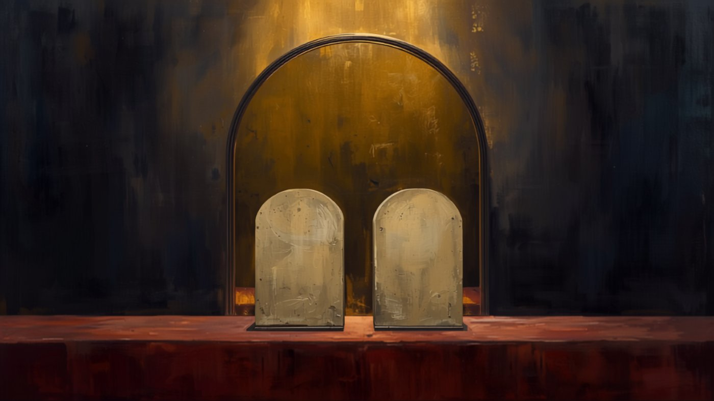

- Enrollment
- Reading
- Assessment
- Results
The Full Gospel
A course on justice, mercy, sin, the cross, repentance, and the Holy Spirit, drawn from the teaching The Full Gospel. Enter your name as it should appear on your certificate, then begin the reading.
Reading
- The Courtroom: Justice and Mercy
- Tested by the Ten Commandments
- The Wages of Sin Is Death
- The Judge Steps Down
- Repent and Believe
- Hell, the Second Death, and Free Will
- What You Must Believe
- The Cup in Gethsemane
- The Seal of the Holy Spirit
- The Plea, the Counselor, and Enduring to the End
- Knowing Him
1. The Courtroom: Justice and Mercy
Imagine a court case. First the accused must be proven guilty: all the evidence is shown, and the verdict is given. Then the judge must issue a sentence. Here a problem appears. Mercy is the opposite of justice, and justice is the opposite of mercy. If the judge shows mercy, he lets go of justice; if he shows justice, he lets go of mercy.
God is both just and merciful in Himself. But no single action can be both. An act of justice is not an act of mercy, and an act of mercy is not an act of justice. So how can a just God also be merciful toward guilty people? God is infinite in wisdom, and there is no problem He cannot resolve. The Gospel is His solution.
2. Tested by the Ten Commandments
If the video does not appear here, watch it on YouTube.

Scripture makes it plain that we are all sinners, and we can test ourselves by the Ten Commandments. Have you never lied? Never taken God's name in vain, whether by using it as a curse, typing "OMG," or treating Him as a mere assistant to the doctor while trusting the medicine to do the real work? Have you never looked at anyone with lust other than your own spouse? Never held anger against a brother in the Lord Jesus Christ, or refused to forgive someone, Christian or not, no matter what they did to you?
Have you never stolen anything, however small? Letting a bill go unpaid, dishonesty in an interview, pirated music, or watching for free what you were meant to pay for all count as theft. Have you never had an impure or blasphemous thought?
Only someone who is holy on their own effort, perfect as God is perfect, could enter Heaven without anyone dying for them. Only the Lord Jesus Christ has lived that way. The rest of us carry sin.
3. The Wages of Sin Is Death
If the video does not appear here, watch it on YouTube.
For the wages of sin is death. Romans 6:23
Wages are what you are paid. What God pays for sin is death, and we are receiving that payment now. We call it "growing old," but according to Scripture it is dying. Wrinkling skin is collagen no longer regenerating; blurring eyes are degeneration. Around the age of 33, the pinnacle of life, the body's regeneration gives way to degeneration. It is no accident that the Lord Jesus Christ conquered the grave at that age and did not see decay.
People were made to live forever. Because of sin, lifespans fell to about a thousand years, then to about 120. (Psalm 90's "threescore years and ten" is the psalmist describing his own generation's age, not a decree that life ends at seventy.) In the Old Testament, people did not begin having children until they were hundreds of years old, and Isaiah 65:20 says that in the resurrection one who dies at a hundred will be counted as a child. What we call aging is the punishment for sin being carried out.
Is a death sentence harsh? Consider a school. To a student, being expelled seems like the worst thing that can happen. To the director over fifty schools, transferring a student to a neighborhood school is not harsh at all. But if one student forced another out and said "you can never come back," that would be wrong. The Creator moving someone out of this world to another is not murder; a creature doing it is. That is the difference between God's judgments and man's violence, and it answers the objection about Israel and the Canaanites: they acted only as messengers carrying out the director's letter.
4. The Judge Steps Down
Justice and mercy cannot move at the same time, so God did not try to do both in one act. As Judge, He gave the proper sentence: death, and spiritual death, for us all. He slammed the gavel. Then He came out from behind the bench, took off the judge's robe, set the gavel down, and as a man went and paid the penalty Himself, because we were His children.
That is what happened on the cross. He did not shortcut the system or work around it. Sin was committed; the wages were death; judgment was executed from the bench; and then the Judge paid the fine. In this way He was perfectly just and perfectly merciful. If you believe this, you receive the salvation purchased on the cross.
5. Repent and Believe
If the video does not appear here, watch it on YouTube.
Repent ye, and believe the gospel. Mark 1:15
Jesus did not say only "believe." He said "repent and believe," because God is not mocked. You cannot say "I receive the payment" and refuse to turn. Repentance means changing direction: deciding, in mind and in body, that you are not doing that anymore.
Some repent and then backslide, repenting of their repentance. But "godly sorrow worketh repentance to salvation not to be repented of" (2 Corinthians 7:10). So stop feeling bad about feeling bad. The sorrow is there to make you sick of the sin so you do not go back. It is not there to make you turn against the Church and protest your right to sin freely.
6. Hell, the Second Death, and Free Will
If the video does not appear here, watch it on YouTube.
Hell is a place of torment that lasts until the return of the Lord Jesus Christ, when death and hell are cast into the lake of fire (Revelation 20:14). The lake of fire is the second death, and it is eternal. Those not found written in the Lamb's Book of Life, who served Satan and never repented and came to the Lord Jesus Christ, are sent there.
God gives everything He can: His Church in this world, the Gospel, even the warning of hell. After all that, He honors your free will. If you do not want Him, understand what you are giving up. The lake of fire is the exact opposite of God: He is rest and peace; it is endless torment without rest.
People say, "I don't want God, but I want to keep my pleasures." But every pleasure they are clinging to was invented by God: the beauty of a woman, the handsomeness of a man, marriage, food and the tongue that tastes it, even the feeling of happiness itself. You are throwing away eternity with God for five toys He gave you — sight, sound, taste, touch, and smell — as if He could not make more than five. If the toys are this pleasurable, imagine what He can do in eternity.
7. What You Must Believe
If the video does not appear here, watch it on YouTube.
A parable on believing. A married woman travels to another country. She is told her husband has died, and she marries again. If she believed he was dead, she is simply a widow who remarried: no sin. If she did not believe he was dead, she has knowingly committed adultery. Whether she sinned depends on what she believed.
In the same way, whether your sins were paid for on the cross depends on what you believe about the Lord Jesus Christ:
- That He is God. A mere man could pay for one life at most, and would still owe for his own sins. Only God can pay for all humanity.
- That He lived a sinless life, so that His death could atone for others rather than for Himself.
- That He came as a man. Sin entered by a man, and by sowing and reaping it must be paid by a man. Humanity had nothing to offer God, so God came in human form so that an offering could be made from humanity to God.
- That He rose from the grave. If the Lord Jesus Christ did not rise, there is no resurrection of the believers for eternity, our sins are not atoned for, and we have no salvation and no hope, but are all damned to the lake of fire forever for our sins. We must believe that the Lord Jesus Christ rose from the grave.
If you believe this, every sin from that moment back into your past is paid for.
8. The Cup in Gethsemane
The Lord Jesus Christ's earthly life was constantly blessed: His ministry flourished, His needs were met, people brought Him everything He required. That changed in the Garden of Gethsemane, when He took the cup of our sin. From that moment He was betrayed, His ministry was attacked, He had trouble with the law, and the people turned against Him. Sin brought all of it.
So when trouble fills your own life, know that sin is behind it, and that you have not applied the blood of the Lord Jesus over that sin. The blood is the remedy.
9. The Seal of the Holy Spirit
If the video does not appear here, watch it on YouTube.
Now if any man have not the Spirit of Christ, he is none of his. Romans 8:9
Believing is not the end. You must receive the Holy Spirit. He is the seal from Heaven, the stamp on your visa showing that your application has been accepted. Without that seal, Paul says, you are none of His.
How do you receive the Holy Spirit? Jesus said to ask, and the Father will give the Spirit to those who ask Him (Luke 11:13). He may seem to delay, as He did with the Syrophoenician woman, but she was persistent and received what she needed, and He taught that this is how He wants us to pray. Do not give up asking.
10. The Plea, the Counselor, and Enduring to the End
If the video does not appear here, watch it on YouTube.
Your life is a court case. The Lord Jesus Christ is your Advocate; Satan is the accuser (1 John 2:1; Revelation 12:10). Satan is constantly accusing you. This is why he keeps Satanists: he tells them to do all kinds of horrible things, then goes to Heaven and betrays and backstabs his own worshippers. He kneels before the Lord Jesus Christ and says, "Lord, look at what these devil worshippers are doing. They are drinking baby blood, aborting babies, fornicating and having orgies, and they don't even worship You. They worship me. Why should You save them? Why should You give them mercy? Let me destroy them and take them to hell to be punished. They don't deserve salvation." Yes, the Lord Jesus Christ gives time to repent and come to salvation, even to those whom Satan has deceived. As long as there is breath in your lungs, you can repent. But do not plan to repent later. God is not mocked; He comes like a thief in the night, and the day you planned for may never arrive. Come as dirty as you are, and let Him clean you.
The salvation offered is like a plea bargain that can release anyone. But a plea always comes with a counselor: a probation officer, a class, a program. In Heaven's court, the Counselor is the Holy Spirit. It is like a parent who pays off all your credit cards and then requires you to take financial classes so you never fall back into debt. The debt is paid once and for all, but from then on you must live differently.
This is why Scripture warns that those who taste the power of God and then fall away are trying to crucify the Son of God afresh (Hebrews 6:4–6), and why the Lord says, "As many as I love, I rebuke and chasten: be zealous therefore, and repent" (Revelation 3:19). When we sin, we take the correction on the spot so that we are not condemned with the world. The probationer who is caught in wrongdoing but goes straight to his officer, confesses, and works out a plan stays in the program. The one who hides and stops reporting is violated and goes back to jail. "He that shall endure unto the end, the same shall be saved" (Matthew 24:13). Names can be blotted out of the Lamb's Book of Life (Revelation 3:5; Exodus 32:33), which means they were once written there.
11. Knowing Him
If the video does not appear here, watch it on YouTube.
Many will say to me in that day, Lord, Lord, have we not prophesied in thy name? and in thy name have cast out devils?… And then will I profess unto them, I never knew you: depart from me, ye that work iniquity. Matthew 7:22–23
These are believers who worked miracles in His name, and He still says "I never knew you." The Greek word for "knew" is the same word Mary used when she said she had not "known" a man: it means a close, loving, and tangible relationship. Knowing His name is not knowing Him.
Picture a stranger who shows up at the door of a man's home and demands to be let in to live there. The head of the household asks, "Do I know you?" The stranger says, "Oh, I know who you are. I know your name. I read the book you wrote, and I tell everyone about your book." And the man answers, "Yes, you know my name, and you've read my book. But I don't know you, and you don't know me. We have no relationship. Why would I let you into my personal home, where my children are, when you could do something to them?" That is what it means to know His name, and even His Word, without knowing Him.
Satan himself was the anointed cherub and had the Spirit, yet he started a war in Heaven. The anointing is an earnest, a down payment, on what you will receive if you endure. It is not a substitute for relationship. Build one now: worship until you are in His presence, cry to Him as your Father, accept His correction, confess and repent when you fall, obey Him and serve Him. Then judgment day is not a stranger's examination; it is the continuation of a relationship you have had your whole life. You are already a citizen of Heaven. Instead of standing before the Judge wondering whether you will be let into Heaven or not, you see the One you have been communicating with your whole life: the One who comforted you in your storms, protected you, guided you, whose presence and Spirit you have felt every day, and into whose loving Father-and-child relationship you have brought so many others. Instead of wondering if you will make it like all the others, He looks at you the way a Father looks at the child He knows so well, and you run into your Dad's arms. That is life everlasting.
Assessment
Twenty questions. The passing standard is 80%; 90% or above is awarded with honors. Answer every question, then submit. The questions and their answers are placed in a different order every time.
Return to the Reading First
The assessment was not passed. Go back through the reading, then come back. The assessment reopens in
Every question needs an answer before you submit.